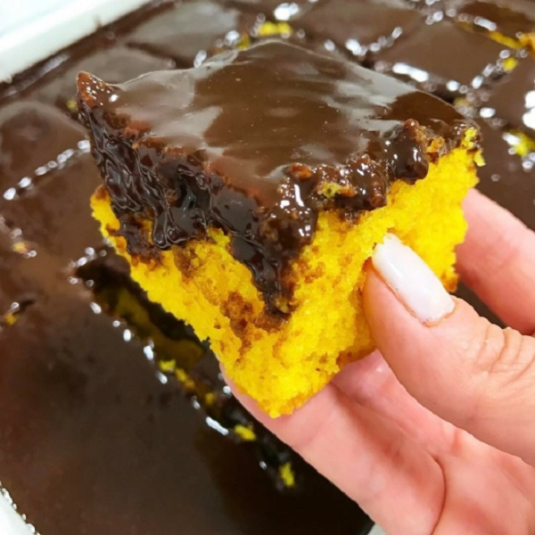

Description
Carrot cake with a delicious honey and
chocolate frosting.
Ingredients
Cake
- 4 eggs
- oil - 1 cup
- 3 medium sized carrots
- sugar - 400g
- leavener - half a spoon
Frosting
- minced strong chocolate - 200g
- heavy cream - 100g
- a spoon of honey
Steps
Cake
-
Beat the eggs, oil, the diced carrots and the sugar in a mixer,
untill it forms an homogenous mixture.
-
Transfer the mixture to a bowl and incorporate, in parts, the flour
and the leavener.
-
Spread the batter into a floured tray.
-
Bake in a pre-heated oven at 350F (180C) degress for around 40 minutes.
-
Take the cake out of the oven and cover it with frosting
Frosting
- In a pan, mix the minced chocolate, the heavy cream and the honey
-
Turn the heat on low and cook while mixing until the chocolate is fully
melted
- Wait for it to cool and spread it over the cake